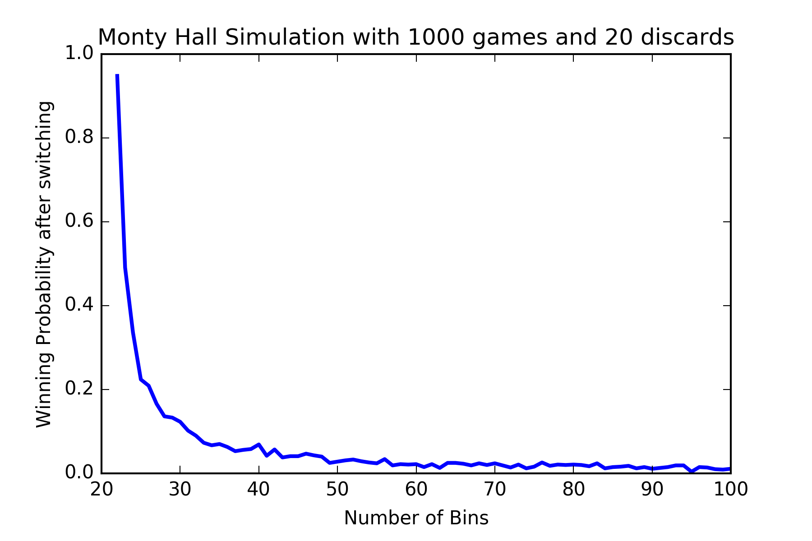
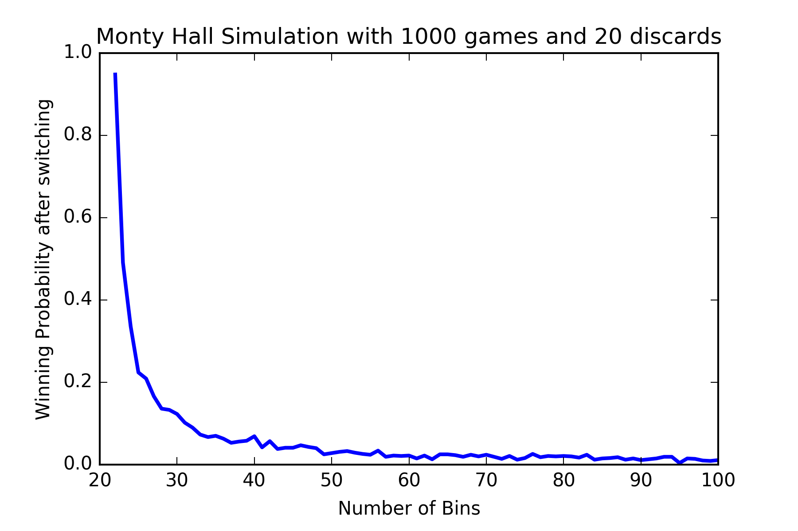
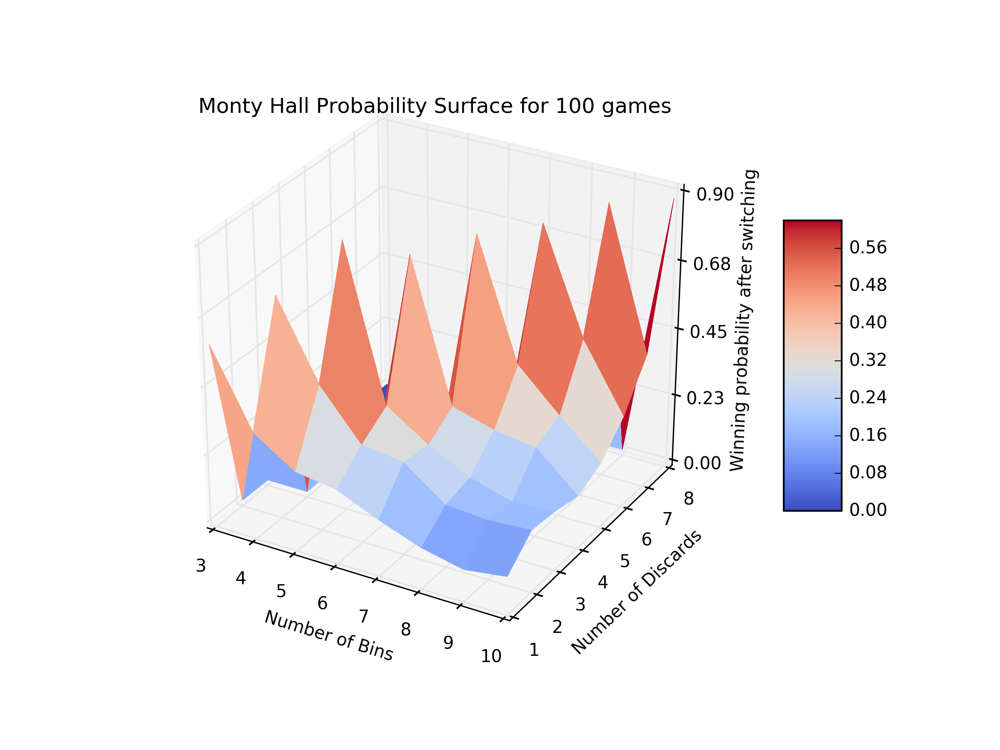

General Monty Hall Simulation
The idea of this post came up to my mind last night. I’m assuming you have already heard about the famous Monty Hall Problem (if you haven’t, watch the quicker intro in Numberphile clip). Here I’d like to demonstrate a simulation taking thegeneral caseinto account, i.e. assume we have \(n\) bins (boxes or doors, whatever) and there’s a prize in one of them and you don’t know which one has the prize. You pick one of those bins at random and since I’m thehostand I know where the prize is located, I’d choose \(k\) boxes and discard them from the game (obviously not the prize and not your first choice, so \(1 \leq k \leq n - 2\)). Then, I’d ask you whether you want toswitchto another box or want to stick to your first choice. Finally, I reveal your choice and see if it contains the prize or not. It’s not hard to compute the probability of winning if you do switch. That’s in fact, \(P(\text{Winning if switching}) = \dfrac{n-1}{n(n-k-1)} > \dfrac{1}{n}=P(\text{Winning if not switching})\) Thus, thebest strategyis to alwaysswitch! Now, I’d like to confirm this withdataby doing simulation in Python.Note:All codes are available in my github and in nbviewer. So first, I create a MontyHall class representing my simulation object as follows:
import numpy as np
from numpy.random import RandomState
from random import sample
from mpl_toolkits.mplot3d import Axes3D
from matplotlib import cm
from matplotlib.ticker import LinearLocator, FormatStrFormatter
import matplotlib.pyplot as plt
%matplotlib inline
class MontyHall(object):
"""
Creates simulation game object
Parameters:
----------
n_games: int Number of games
n_bins: int Number of bins
n_discards: int Number of discard options, between 1, n_bins-2
switch: boolean Switch or not
seed: int Seed number
"""
def __init__(self, n_games, n_bins, n_discards, switch=False, seed=123):
self.n_games = n_games
self.n_bins = n_bins
if 1 <= n_discards <= n_bins-2:
self.n_discards = n_discards
else:
raise ValueError("n_discards must be between 1 and n_bins-2")
self.switch = switch
self.seed = seed
def set_prize(self):
""" Set prize randomly for each game with fixed RandomState """
prng = RandomState(self.seed)
return prng.randint(0, self.n_bins, self.n_games)
def player_first_choice(self):
""" Player first choice in each game with fixed
RandomState to get same numbers in different calls
"""
prng = RandomState(2 * self.seed)
return prng.randint(0, self.n_bins, self.n_games)
def player_final_choice(self):
""" Player final choice after discarding some options by host"""
if not self.switch:
return self.player_first_choice()
else:
opts = list(range(self.n_bins))
arr = np.vstack([self.player_first_choice(), self.host_discard()])
final = self._col_choice(opts, arr, 1)
return final
def host_discard(self):
""" Host choice for removing n_discards bins"""
if self.switch:
opts = list(range(self.n_bins))
arr = np.vstack([self.set_prize(), self.player_first_choice()])
disc = self._col_choice(opts, arr, self.n_discards)
return disc
def _col_choice(self, opts, arr, n_disc):
""" Possible choices per game"""
try:
res = np.apply_along_axis(
lambda x:
sample([v for i, v in enumerate(opts)
if i not in set(x)], n_disc),
axis=0,
arr=arr)
return res
except:
print(self.n_discards, 'must be less than', self.n_bins - 1)
def score(self):
""" Calculate the number of wins"""
return np.sum(self.player_final_choice() == self.set_prize())
def proba(self):
""" Compute the winning probability"""
return self.score() / self.n_games
def __str__(self):
if not self.switch:
return 'Probability of winning if not switching: %.4f' \
% self.proba()
else:
return 'Probability of winning if switching: %.4f' \
% self.proba()Now, for example, we can confirm the famous Monty Hall result by defining
def simulation_proba(n_games, n_bins, n_discards, switch):
""" Compute simulation probability of n_games with n_bins
and n_discards options
"""
g = MontyHall(n_games=n_games, n_bins=n_bins, n_discards=n_discards, switch=switch)
return g.proba()and then calling print(simulation_proba(100000, 3, 1, switch=True)) we’ll get \(0.6665 \simeq \dfrac 23\) as the winning probability if you switch, if you were to play the game \(100,000\) times and record all the results for the case where \(n = 3, k = 1.\) Let’s see the results for \(n = 4, k = 1, 2\)
print(simulation_proba(100000, 4, 1, switch=True))
# 0.3746
print(simulation_proba(100000, 4, 1, switch=False))
# 0.2500
print(simulation_proba(100000, 4, 2, switch=True))
# 0.7500
print(simulation_proba(100000, 4, 2, switch=False))
# 0.2499Okay! to better see the results, let’s plot the probabilities against the number of bins.
import matplotlib.pyplot as plt
def simulation_2dplot(n_games, max_bins, n_discards=1, switch=True):
""" Simulation 2D plot"""
X = np.array(range(n_discards+2, max_bins))
Y = np.array([simulation_proba(n_games, b, n_discards, switch) for b in X])
plt.plot(X, Y, linestyle='-', color='b', lw=2)
plt.xlabel('Number of Bins')
if switch:
plt.ylabel('Winning Probability after switching')
else:
plt.ylabel('Winning Probability if not switching')
plt.title('Monty Hall Simulation with %d games and %d discards'
% (n_games, n_discards))
plt.ylim(0.0, 1.0)
plt.savefig('simulation_2dplot.png', dpi=300)
plt.show()
simulation_2dplot(n_games=100, max_bins=101, n_discards=1, switch=True) or even with \(20\) discard options! 
or even with \(20\) discard options! 
Monty Hall Surface
Now, let’s see what the 3D surface plot looks like.
from matplotlib import cm
from matplotlib.ticker import LinearLocator, FormatStrFormatter
def simulation_3dplot(n_games, max_bins, max_discards, switch):
""" Simulation 3D plot"""
X = np.array(range(3, max_bins))
Y = np.array(range(1, max_discards))
X_grid, Y_grid = np.meshgrid(X, Y)
triu_idx = np.triu_indices(n=max_discards-1)
X_grid_utri, Y_grid_utri = X_grid[triu_idx], Y_grid[triu_idx]
vect_simulation_proba = np.vectorize(simulation_proba)
Z = vect_simulation_proba(n_games, X_grid_utri, Y_grid_utri, switch)
nZ = np.zeros((max_discards-1, max_discards-1))
nZ[triu_idx] = Z
fig = plt.figure(figsize=(8, 6))
ax = fig.gca(projection='3d')
surf = ax.plot_surface(X_grid, Y_grid, nZ, rstride=1, cstride=1, cmap=cm.coolwarm, linewidth=0, antialiased=False)
ax.set_zlim = (0.0, 1.0)
ax.set_xlabel('Number of Bins')
ax.set_ylabel('Number of Discards')
if switch:
ax.set_zlabel('Winning probability after switching')
else:
ax.set_zlabel('Winning probability if not switching')
ax.zaxis.set_major_locator(LinearLocator(5))
ax.zaxis.set_major_formatter(FormatStrFormatter('%.02f'))
ax.set_title('Monty Hall Probability Surface for %d games' % n_games)
fig.colorbar(surf, shrink=0.5, aspect=5)
fig.savefig('3d_simulation.png', dpi=300)
plt.show()
simulation_3dplot(100, 11, 9, switch=True)